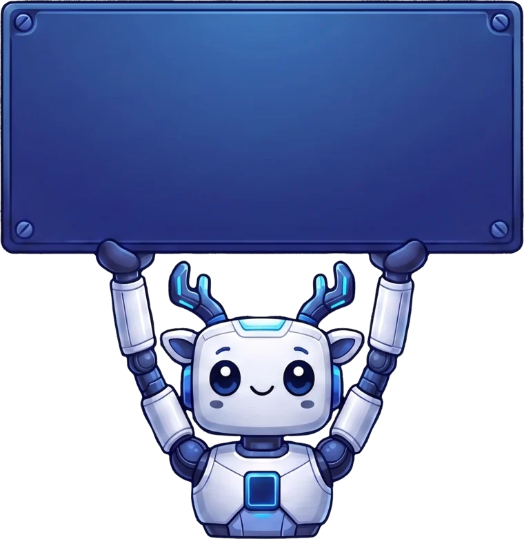

<encuestamos a 100 programadores... y nadie leyó la documentación />
Configurar partida
0
BANCO 0
0
Agregar pregunta
Preguntas agregadas por ti
¿Cómo se juega?
Dos equipos compiten durante varias rondas normales y una
ronda final donde los puntos valen doble (por defecto 3 rondas + la final;
se cambia en Configurar partida).
Cada ronda muestra una pregunta de encuesta con 5 respuestas ocultas (configurable),
ordenadas de la más popular a la menos popular.
Cara a cara: un representante de cada equipo. El moderador marca quién
presionó primero; ese jugador responde. Si atina la respuesta #1, gana el control.
Si no, responde el otro y gana quien tenga la respuesta con más puntos.
El ganador del cara a cara decide si juega o pasa.
El equipo con el control adivina las respuestas restantes. Cada acierto suma al
banco. Con 3 errores (✕ ✕ ✕) (configurable) el otro equipo
tiene una oportunidad de robar el banco.
Si se acaba el tiempo para responder, cuenta como error.
Quien gane la ronda se lleva el banco. Al final gana el equipo con más puntos.
Para el moderador
Presiona ▣ Abrir proyector, arrastra esa ventana a la pantalla del proyector y
haz doble clic en ella para ponerla en pantalla completa. Esta ventana (el panel)
se queda en tu laptop.
En la tarjeta del moderador ves todas las respuestas: haz clic en una (o presiona
su número) para aceptarla, o presiona T para escribir lo que dijo el jugador.
No importan mayúsculas, acentos ni espacios: "STACK overflów" = "stackoverflow".
Si la respuesta es dudosa, el juego pregunta si la aceptas.
Mientras decides, el tiempo se pausa.
¿Te equivocaste? ↶ Deshacer (Ctrl+Z) regresa la última acción.
La partida se guarda sola: si se cierra el navegador, usa ⏯ Continuar partida.
Una respuesta que ya está en el tablero no cuenta como error.
♫ Música (arriba a la derecha) pone música chiptune de fondo; baja sola cuando suena un efecto.
☀ Tema claro: úsalo si el auditorio tiene las luces encendidas. Cambia también el proyector.
⏰ Hora de inicio (en el menú): la portada del proyector muestra la cuenta regresiva mientras entra el público.

★ GANADOR ★
¡Gracias por jugar!
Proceso terminado con código de salida 0. Ya puedes cerrar esta pestaña.